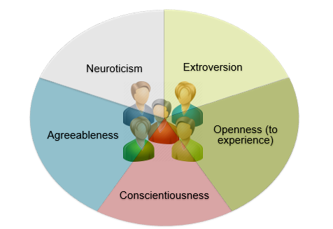

Raghav Pavan Karumur
Doctoral Candidate
Computer Science and Engineering
University Of Minnesota, Twin Cities
email: raghav at umn dot edu
[Google Scholar Profile]
Different Strokes for Different Folks: The Value of Personality Type in Recommender Systems and Social Computing
Did you know that your personality could be used to predict your behavior (how long you stay, what you do, whether and how much you are likely to rate) on an online site and what to recommend to you? That’s what we found in our latest research using the MovieLens recommender system and the Big Five Personality scale for modeling user personality.

In our first piece of research, we try to study newcomer retention, type, and level of contribution associated with various personality types for 1008 new users. We found that if you are an introvert, you are likely to stay longer and be more active on MovieLens. If you are highly open, you are likely to tag more, and if you are less agreeable, you are likely to provide more number of ratings!!
In our next piece of research, we tried to study different personality types vary in their preferences for various categories such as Genres, Popularity (high or low), and Rating level (low-rated movies, medium-rated, and high-rated).
We see from the picture above that highly agreeable users are less critical of movie categories (provide at least half-star higher ratings) in some categories compared to less agreeable users.
Findings such as these suggest that aggregating ratings of all users to provide recommendations may not be a good idea. Also, documenting stable relationships between individual differences and category preferences can be useful for online system designers as they customize the system to guide people towards tasks that need to be done (such as recommending the right categories to elicit ratings from users), or tasks the users will find rewarding (such as providing better cold-start recommendations, personalizing lists of movies at different times) and also decide which users to invest retention efforts in.
To know more about our data collection process, analyses, and for a full list of all of our findings on various personality types, please check out our papers on modeling newcomer personality, personality and category preferences (video), and personality and user behavior on recommender systems!
The more they try, the more they are likely to come back!!
Are you trying to launch an online site for customers? Do you know that on an average, 60% of users do not return after using the site once?
In this research, we discover factors that predict whether first-time users return to MovieLens, our movie recommendation site. A model based on these factors successfully predicts 70% of returning users (and non-returning ones). Notably, the best single predictor of user return is the diversity of features explored in the user’s first session! Along the way, we develop a process and metric for activity diversity -- one that can be applied to any site or context. Interested in further details?
Upon discussion with psychologist Mark Snyder, a Professor at the University of Minnesota, my collaborator (Joe Konstan) and I learned that a volunteer who is aware of more ways of getting involved with an organization is more likely to remain committed longer than one who isn’t. For example, a volunteer for Red Cross who is rotated through different activities such as giving out cookies, checking people in for blood drives, and helping the hurricane victims is more likely to be committed to Red Cross in the long run compared to a volunteer who only gives out cookies. We wondered if that is true with online sites too. A site like MovieLens has 17 different and very diverse features (see figure). We hypothesized that someone who has tried out more features in the first session is more likely to return to the site than one who hasn’t.

But how do we capture the diversity of features tried? From the above figure, we see that features like providing ratings, or tags are very similar (annotations), but these are very different from inviting your friends to the site, or managing your own profile. So, a simple count of the number of features is not a good diversity metric. Also, most existing diversity metrics such as the Gini-Simpson Index increase with the level of overall activity. This will make it difficult to tease out and study the effect of diversity independent of the amount of activity. All these challenges led to the design of a new metric.
Based on a distance-tree analysis of the online site’s features, in this work, we developed a metric called DSCORE that addresses all these challenges. First we used a card-sorting technique to organize all of the site’s features into a tree (asking site users and administrators to cluster together related features). We then computed DSCORE which aggregates the diversity of experiences, giving higher weight to activities that are farther apart in the classification tree. Together with another metric called ASCORE for the total amount of contributions, we build machine learning models for user retention. Our results show that diversity is the best single predictor of first-time user retention. Based on future experiments that can confirm our findings, sites could be re-designed for a more diverse first-time experience that can get new users to stay longer.
Check out my paper on early activity diversity for more details!
Together: A collaborative end-of-life decision making tool for (Ovarian) Cancer Patients entering Hospice
Know of someone diagnosed with Cancer? Ovarian Cancer accounts for more deaths than any other kind of cancer in women. It affects older women; approximately 90% are diagnosed when they are older than 40 and the greatest number of cases are diagnosed in women over the age of 60. In most cases, the diagnosis happens at an advanced stage (Stage III-IV). The risk for recurrence is 60-70% and women who recur currently cannot be cured.

For individuals with metastatic disease and/or high symptom burden (both of which are characteristic of women with Ovarian Cancer, the American Society of Clinical Oncology recommends early provision of palliative care - a process aimed at improving the quality of life and reducing symptoms. Enabling and supporting patients to make informed decisions about their care represents a core element of quality palliative cancer care.
Due to lack of online interventions for women with ovarian cancer, and none directed at advance care decision making, we developed a comprehensive website with (i) personalized expert information tailored to disease phase and learning/coping style, (ii) secure access to online forums for discussions with other patients, caregivers and providers, (iii) emotion and cancer-related symptom tracking tools and (iv) tools to promote advance care decision making. We published the results of usability testing of this website in IJHCI. This work serves as a model for future research aimed at developing decision-making tools for other cancers and incurable diseases.